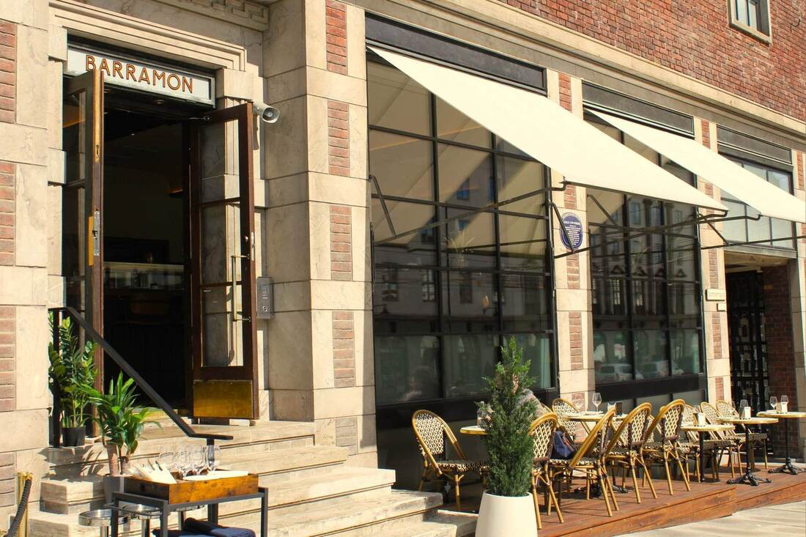
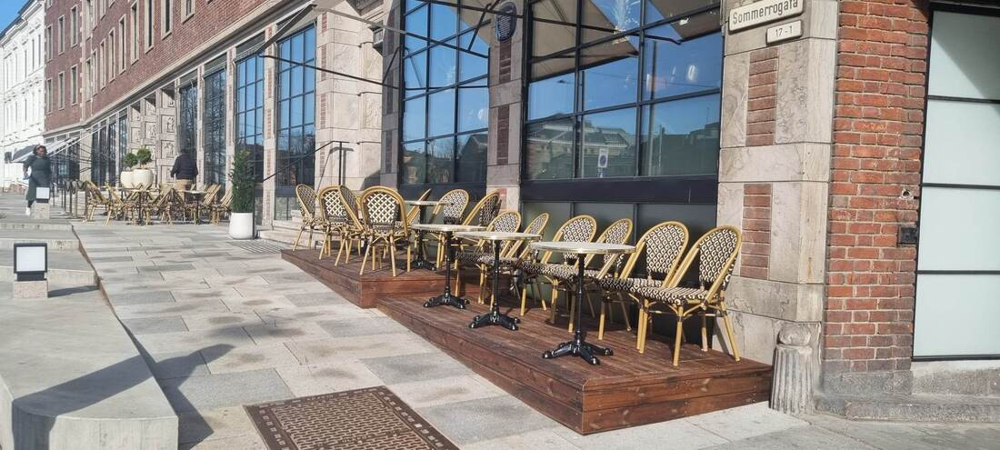
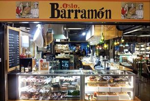
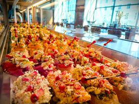
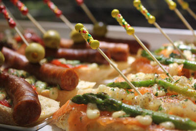
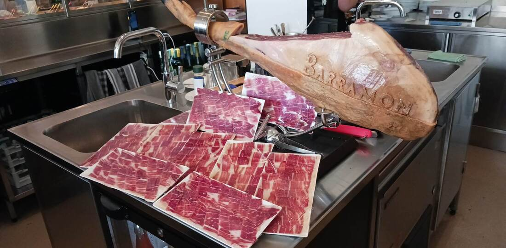
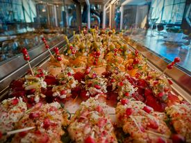
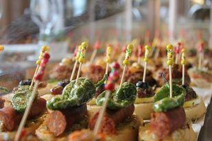
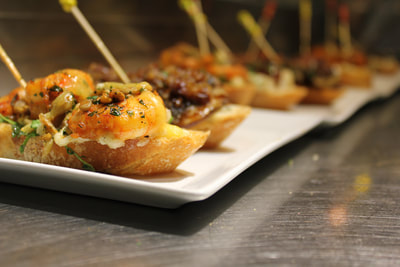

Pintxos · Vin · Mathallen
Baskisk pintxos-kultur, midt i Oslo
To barer, én sjel. Håndlagde pintxos, à la carte og spanske viner vi importerer selv — på Sommerro og i Vulkan Mathallen.

Hva er pintxos?
Baskisk tapas, ett stykke brød om gangen
Pintxos er delikate smaker satt sammen på ett stykke brød, holdt på plass av den klassiske pintxos-pinnen — og det er fargen på pinnen som bestemmer prisen. Enkelt å dele, umulig å stoppe med én.
Hos Barramon serverer vi et rikholdig utvalg av pintxos og à la carte-retter, sammen med spanske viner vi importerer selv. Rammen er lagt for et uformelt og hyggelig kulinarisk møte med baskisk kultur.
Våre steder
Tre måter å møte Barramon

Pintxos-bar
Sommerro
À la carte, pintxos og spanske viner på glass, med uteservering rett ved Sommerrogata.
Se Sommerro →
Pintxos-bar & catering
Mathallen
Vår bar i Vulkan Mathallen — rikholdig pintxos-utvalg og utstrakt cateringvirksomhet.
Se Mathallen →
Import
Vin
Vi importerer egne spanske viner direkte fra Spania — flere finner du også hos Vinmonopolet.
Se Vin →Fra kjøkkenet
Et lite utvalg av det som venter





